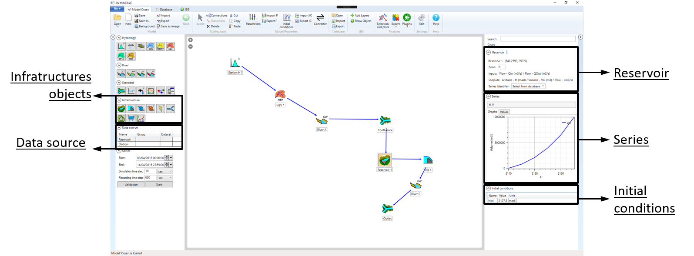

2 Hydraulic infrastructures modelling
This document contains the User and Technical Manuals of the RS MINERVE software. These manuals are constantly updated. This version corresponds to the Software version 2.9.1.
Section 1 presents the different steps to create a hydrological model without any hydraulic infrastructures. Section 2 explains how infrastructures like reservoirs, turbines or spillways are implemented in RS MINERVE.
Hydraulic infrastructures are listed in Section 2.1, and objects used for automatic regulation are presented in Section 2.2 and Section 2.3.
2.1 Infrastructures
| Reservoir - Water level and volume evolution are simulated based on a “Level-Volume” relation and an initialreservoir level. | |
| HQ - Based on a level-discharge relation, it allows integration of level-based outflows to reservoirs (such as spillways, gates, orifices,…). | |
| Turbine - It calculates the turbine or pump flow from a reservoir, based on a Wanted Discharge defined in the same object by a time-discharge series. | |
| TurbineDB - The TurbineDB object works as the Turbine object but is directly based on data provided by the database. It is equivalent to the combination of a turbine and a source. | |
| Hydropower - This object calculates the power and the revenue, normally produced by a turbine, depending on the discharge and on the reservoir level. | |
| Diversion - This object is used to simulate the separation of flow based on an “Inflow - Diverted flow” relation. It can be used as a hydrological object but is mostly used as a hydraulic function. | |
| Consumer - This object simulates the consumed dischargeof a user (e.g.: a village or an agricultural field) based on a series from a database or from a uniform demand. | |
| Structure efficiency - This object computes effects of discharge losses in a structure like a canal or a pipe based on an efficiency coefficient. | |
| Planner - This is a control system consisting of the definition of a set of management rules, based on conditions. This object allows you to manage the regulation of reservoirs, turbines, bottom outlets, etc. |
2.2 Addition of a Hydropower scheme
This chapter presents a general example for the construction of a hydropower scheme, including a reservoir with a hydropower plant, a turbine and a spillway.
Addition of a reservoir
To add a reservoir:
Select the object Reservoir in the Infrastructures objects frame (2) and add it in the Interface.
Link the output of the upstream sub-basin (object Junction in 2) to the Reservoir.

Double-click on the Reservoir object. The Reservoir, Series and Initial Conditions frames are opened (2).
In the Series frame, select the H-V series and open the Values tab.
By default, the table is empty. Insert the corresponding Height-Volume (H-V) relation for the reservoir.
Define an initial water elevation (\(HIni\)) in the Initial conditions frame.
Alternatively to the last point to define the initial water elevation of the Reservoir, a time series can be saved in the database with a sensor of Category Altitude and Unit masl. For each simulation, RS MINERVE will then search and interpolate the initial condition from the added time series. To link the Reservoir with the sensor, first select in the Data Source frame the corresponding Group and Dataset.
Then, in the Reservoir frame (right part), click on the  Select station from Database button and define the correct station in the Station drop-down list (only stations containing a sensor with appropriate units are listed). The value in the Initial conditions frame will change after every simulation to the value interpolated from the time series.
Select station from Database button and define the correct station in the Station drop-down list (only stations containing a sensor with appropriate units are listed). The value in the Initial conditions frame will change after every simulation to the value interpolated from the time series.
Once a reservoir is implemented, outputs of the reservoir have to be defined. Water from a reservoir can be exited through different ways. A combination of Turbine (or TurbineDB) and Hydropower objects are used to simulate the use of water for hydropower production. Regulations are generally used to automatize the operation of Turbine and TurbineDB objects. Finally, HQ objects generate discharges based on elevation-discharge relations.1
All these objects can be used independently and cumulatively. For example, several turbines can be placed in parallel with one or several TurbineDB(s), HQ object(s) and/or Regulation(s). None of them is imperative.
Addition of a TurbineDB object
The TurbineDB object is based on data from a database. Thus, before adding a TurbineDB, data have to be added to the database
- Open a database (see Section 3) and create a station with a sensor of category Flow. Modify the description and insert data for the TurbineDB outflow in the Values tab.
The TurbineDB object is then added.
- Select the object TurbineDB in the Structures objects frame
- and add it in the Interface. Add also a Junction to which outflow(s) from the Reservoir will be linked to.
- Switch to Connections (Editing Tools frame \(\rightarrow\) Connections or use the space key) and link the Reservoir to the TurbineDB object and the TurbineDB object to the Junction (Figure 2.2).
In the Data Source frame (2), select for the line HPP 2 the Group and DataSet corresponding to the sensor created in the database.
Double-click on the TurbineDB object to open the TurbineDB frame (right-side). Then, click on the
 Select station from Database button and define the corresponding station in the Station drop-down list. The link between the TurbineDB object and the database is now operational.
Select station from Database button and define the corresponding station in the Station drop-down list. The link between the TurbineDB object and the database is now operational.In the Parameters frame (Figure 2.3), user can define the reservoir water altitude to start (\(H_{on}\)) or stop (\(H_{off}\)) the turbine. If the value is equal to zero, the turbine operation will be independent of the reservoir altitude.
In the Initial conditions frame (Figure 2.3), user must define the initial turbine status when the water altitude is initially between \(H_{on}\) and \(H_{off}\). ‘Zero’ (0) means starting the simulation with the turbine OFF and ‘one’ (1) means starting with the turbine ON.
Once these parameters specified, the TurbineDB object is ready for use.

Addition of a Hydropower object
The Hydropower object calculates the power and the revenue produced by the discharge of the turbine from the reservoir. The results depend on the discharge and on the reservoir water level.
- Select the object Hydropower in the Structures objects frame
- and add it in the Interface (Figure 2.5).
As the power produced in the hydropower plant depends on the water level in the reservoir and on the discharge of the turbine, these two variables (water level and discharge) must be transferred to the Hydropower object as follows (Figure 2.6):
Link the TurbineDB to the Hydropower object so the discharge variable can be transferred to the Hydropower object.
The water level information will be automatically transferred from the Reservoir to the Hydropower object through the TurbineDB object.
Double-click on the Hydropower object to open its frame (right-side). Then, click on the
Select station from Database button and define the corresponding station which contains the Electricity price series in the Station drop-down list. The link between the Hydropower object and the database is now operational.In the Series frame, select the Q-\(\eta\) (discharge-efficiency) series and open the Values tab. Insert data for the Q-\(\eta\) relation (manually or copied from a spreadsheet).
In the Parameters frame, introduce the features of the hydropower plant. In particular the following parameters must be specified: the hydropower plant altitude (\(Zcentral\)) in masl; the length of the pipe (\(L\)) in m; the diameter of the pipe (\(D\)) in m; the Roughness (\(K\)) in m; the kinematic viscosity (\(\nu\)) in m2/s; and the default price of electricity, only used if no data exists in the database.
The Hydropower object is ready for use.
Addition of an HQ object
HQ objects are used to define level-discharge relations to implement structures such as spillways, orifices or sluice gates. For illustration purpose, an HQ object is used as a spillway in the following procedure.
Select the HQ object in the Structures objects frame (2) and add it in the Interface.
Link the Reservoir to the HQ object and the HQ object to the Junction (Figure 2.7).
- Double-click on the HQ object. In the Series frame, select the H-Q series and open the Values tab. Insert data for the H-Q relation (manually or copied from a spreadsheet).
The HQ object is ready for use.
Simulation with implemented structures
Several structures can be added in parallel as illustrated in Figure 2.7. When all objects are created, the model linked to the database and validated, start the simulation (Section 5.1). Discharges through the different objects can then be visualized by clicking on each object (Section 5.1) or within the Selection and Plots module (Section 5.2).
It is important to remember that discharges generated by HQ objects are defined by the water level in the reservoir. Below a certain level, no discharge is produced. This is not the case of the TurbineDB objects that withdraws from the reservoir the discharges defined in the database, without checking if water is available or not in the reservoir. This might result in a negative volume in the reservoir (a warning is generated in the Simulation report). In order to generate discharges only when the water is actually available, Regulation objects are necessary.
2.3 Implementation of a planner
The planner object represents a control system that allows the definition of a set of management rules based on conditions. This object allows regulating the operation of reservoirs, turbines and hydropower models in RS MINERVE.
Each rule is defined using one or more conditions (that can be combined), temporary restrictions (specific dates, hours, days of the week, or months of the year) and an expected output. The conditions and the temporary restrictions define the rule to be applied (and corresponding output). The input values for the conditions can be defined in different ways: directly taken from the variable of some object of the full model (e.g., a specific reservoir), its own input or depending on the state of another rule defined in the same planner. The output can be generated from a predefined series of values, through the database, as one of the three possible inputs of the planner object or by setting a specific value. Furthermore, the output values can be modified by applying a multiplier and/or additive coefficient(s). A planner can be connected from all objects and to all objects except to stations, time series and sources (Figure 2.8).
Once we have simulated the model, the planner shows at what times each defined rule has been applied. With all these options, the planner object is an efficient tool for managing complex systems.
Planner
The first part of the Planner window (right frame) shows basic information about the object (Figure 2.9).
To know if the planner is correctly connected in the model, the exclamation mark should be green; if it is not, the exclamation mark will be orange and the object will be isolated and not calculated (Figure 2.10). In that case, it will indicate what part of the planner element is not correctly defined.
- Click on the blue circular arrow (“Clear variable”) to reset inputs information after connections are removed.
Figure 2.11 shows an example with one Input (\(Altitude\)) and two outputs (\(Qdown1\), \(Qdown2\)):
Outputs
The second part allows the user to add or delete outputs for the object (Figure 2.12). The number of outputs for a planner object is not limited.
To add a new output, choose the category and then push the “Add new output” button (green cross).
To delete an output, choose the output and push the “Delete output” button (red cross).
Series
The third part shows the series that can be used by the planner object (Figure 2.13). The user can define new series linking different variable types. It’s also possible to delete the existing series. As in the output section, the number of series for one planner object is not limited.
To add a new series, choose the category and select the independent variable, then push the “Add new series” button (green cross).
To delete a series, choose it and push the “Delete series” button (red cross).
Rules
The fourth part shows basic information about the rules for the management of the object (Figure 2.14). This part is divided into four sections: Conditions, Time, Output generation and Initial rule state. The rules’ listing in the table defines the order in which those rules will be applied.
- To move the rule in the table you can use the up and down arrows.
Example is shown in Figure 2.15. It shows summary information about the rules.
In the Conditions section, the user can define stand-alone or combined conditions (Figure 2.16). To define the condition, it’s possible to use the planner’s inputs, the results of any object or the states of other rules (Figure 2.17). The “always satisfied” option allows defining a condition as always true.

Once one or more rules are defined, the user can create combined conditions using operators between conditions (AND, OR …).
The number of conditions is not limited.
Figure 2.18 shows an example, with some stand-alone conditions and combined conditions. At the end, it shows summarize information about the combined conditions (violet, as a simplified expression with names, and blue as expanded expression with descriptions).
In the Time section, the user can define a time schedule to turn on or off the rule depending on the time (Figure 2.19).
Figure 2.20 shows an example with a schedule to start and stop the rules.
In the Output generation section, the user can define how to create the output (Figure 2.21).
An example is shown in Figure 2.22 with a specific value (19 m3/s) for the output (Qdown1).
In the last section, Initial Rule State, the user can define the initial rule state for the planner object at the beginning of the simulation (Figure 2.23).
Simulation with the planner implemented
Once the planner object is properly implemented, the user can start the simulation. Results can be visualized by double-clicking on the object or by using the Selection and Plots module (Figure 2.24).
As outputs from the Reservoir are defined by downstream objects, output flows (Qs) are considered as an Input to the Reservoir in terms of information flow. The corresponding water is thereby withdrawn from the stored volume. This implies that at least one output flow has to be defined to validate the model.↩︎
Short for HydroPower Plant, which includes the TurbineDB and the Hydropower objects.↩︎